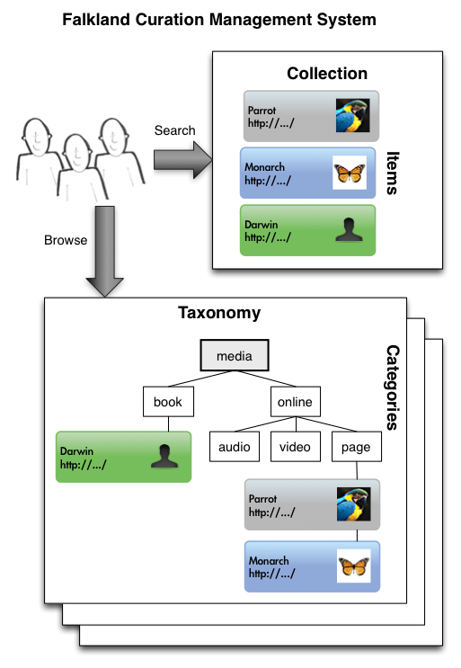

WHY USE FALKLAND CMS?
Like its inspiration, Omeka, Falkland CMS sits at the intersection between a traditional Web CMS, a Digital Collection Management system, and a Museum Exhibit Management system. Unlike Omeka, Falkland CMS is written in Clojure, ClojureScript and CouchDB and has a certain elegance and panache.
Ideal uses:
- a repository of digital collections
- online presentation of library collections
- online museum exhibits
Who is this for?
Falkland CMS is for anyone who wants to collect, organize, curate and present the knowledge that exists in the world about a particular topic:
- scholars and professors
- teachers and students
- museum and exhibit curators
- librarians and archivists
- historical organizations
- collectors, hobbyists and enthusiasts
Who is this not for?
Falkland CMS is not for everyone, if these describe you, look elsewhere:
- Anyone that needs extensive new content authoring
- Anyone that needs extensive, professional-grade offline artifact cataloging
- Anyone that needs granular security
What are some (hypothetical) example uses of Falkland CMS?
These would be perfect fits for Falkland CMS:
- The Venerable VIC-20 - an online exhibit of everything Commodore VIC-20
- Camus.org - a primary and secondary source collection for the philosopher Albert Camus
- Mudskippers.org - a guide to all the world's knowledge about the amazing amphibious fish
- Jack Freeman's Library - presenting 40 years of one man's books
- nil.org - a complete guide to Nihilism
- 8-bit '80's - a site to exhibit an extensive retro video game collection
- The Pitiful Pirates - a history of the Tampa Bay Buccaneers from 1976-1995
What are some (real) example uses of Falkland CMS?
Falkland CMS was created to support Falklandsophile, the complete guide to resources about the Falkland Islands. This is where the name for Falkland CMS came from.
If you're using Falkland CMS, please drop me a note and let me know.
How is Falkland CMS Different than a Content Management System?
A traditional CMS or WCMS (web content management system) is a system for publishing website content. Key features of a WCMS are:
- separation of content and presentation
- easy editing of content, usually through an administrative web UI
- collaboration of multiple content authors
- templates to take the data in the system and present it as web content, typically HTML
Falkland CMS has these foundational capabilities, but is not focused on the creation of new content. Instead, Falkland CMS is used for collecting, curating and presenting existing content. Falkland CMS supports authoring new content, but this new content is intended to provide context for the presentation and exhibition of collected resources. Falkland CMS is not intended as a WCMS for a huge corpus of brand new content. You wouldn't run a daily newspaper with Falklankd CMS. Its primary role is to point to existing content, either content on the web, or content collected into Falklands CMS.
Because of this difference of focus, the acronym that is used for Falkland CMS is Curation Management System.
KEY CONCEPTS

Collections
A Falkland CMS instance support one or more collections of items. A collection is all the items that you'd like to be organized and searched on together. Taxonomical organization and searches don't span multiple collections so usually you'll have just one collection or each collection will support a website or app for experiencing the collection. There may be cases where you have multiple websites or apps supported by the same collection or one website or app accessing multiple collections, but these would be less typical.
Items
Items are referential in nature. They act as a catalog entry for something: a web page, a book, a product, a person, an animal, a building. The possibilities are endless and simply depend on what it is you are trying to curate.
Taxonomies
A taxonomy is a particular classification scheme for organizing items into hierarchical categories. Central to Falkland CMS is supporting multiple independent taxonomies. Most collections will have many different taxonomies to categorize their items by different criteria.
Faceted Search / Navigation
Faceted search or faceted navigation is full-text search blended with navigation by multiple, orthogonal filters. It's possible with faceted search for example to do a full text search on "Camus BBC" and then drill down into the search results limiting them to the "online video" in the media taxonomy, and the "United States" in the geography taxonomy. Faceted search and navigation is a powerful technique for quickly exploring a large catalog of items.
Pages
There are 3 types of pages:
- item - displays a single item from the collection.
- category - displays the items in a particular category of a particular taxonomy.
- exhibit - may reference many named or searched for resources, but could also be made up of just static content. A home page is a good example of a dynamic exhibit page, and an about page, or terms of use page is a good example of a completely static exhibit page.
Security Model
Users of Falkland CMS are one of three types:
- Administrator - named users that can administer the configuration of the system and all items.
- User - named users that can create, update, and delete all items in the system, but not administer the configuration of the system.
- The General Public - everyone accessing the system anonymously with their web browser.
STATUS
Falkland CMS is pre-alpha and not yet usable. A usable version is expected by the end of 2013.
INSTALLATION
Quick Start - Heroku
Quick start instructions for Heroku are expected by the end of November 2013.
Local Installation
Most of Falkland's dependencies are internal, meaning Leiningen will handle getting them for you. There are a few exceptions:
- Java 7 - a Java 7 JRE is needed to run Clojure
- Leiningen - Clojure's build and package management tool
- CouchDB - CouchDB is a schema-free, document-oriented database, ideally suited for a CMS
- elasticsearch - elasticsearch is a schema-free, document-oriented search engine, ideally suited for CouchDB
Detailed instructions for local installation are expected by the end of November 2013.
API
At this point in time, Falkland CMS supports a Clojure API and a REST HTTP API.
DEVELOPMENT AND CONTRIBUTING
Please fork Falkland CMS on GitHub if you'd like to enhance it. Submit your pull requests if you'd like to contribute back your enhancements. I promise to look at every pull request and incorporate it, or at least provide feedback on why if I won't.
GETTING HELP
Falkland CMS is pre-alpha and not yet usable. A usable version is expected by the end of 2013 and instructions for getting help will be available then.
LICENSE
Falkland CMS is distributed under the Mozilla Public License v2.0.
Copyright © 2013 Snooty Monkey, LLC